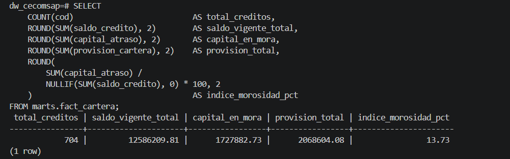
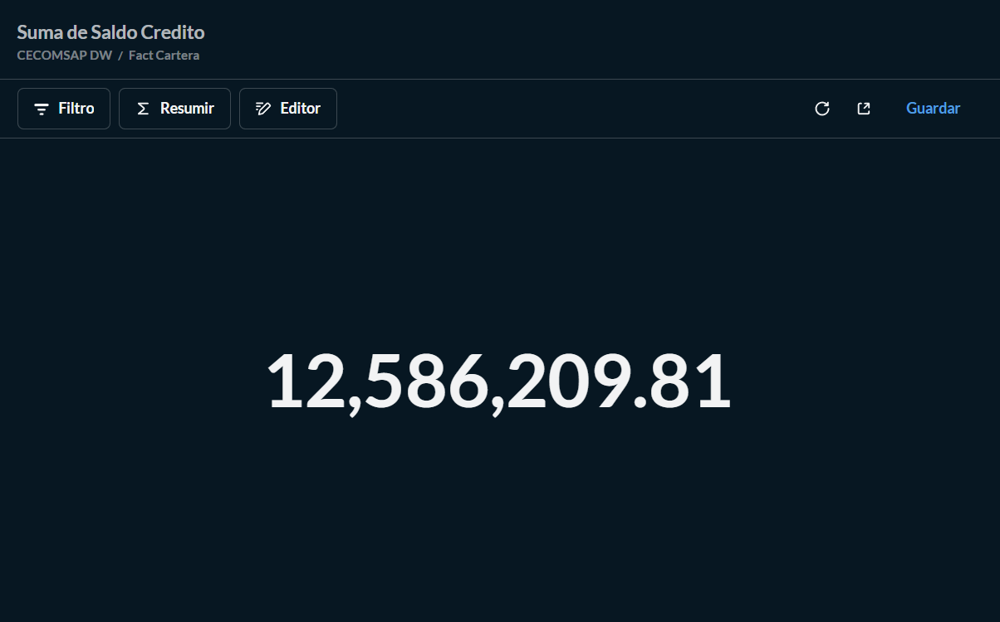

Validación de KPIs
11. Validación de KPIs
11.1 Conciliación SQL vs Power BI
Comparamos cada KPI ejecutando la consulta SQL equivalente de 7_validacion/04_kpis_analiticos.sql y comparando contra la medida DAX en Power BI.
| KPI | SQL — marts.fact_cartera | Power BI | Diferencia | Estado |
|---|---|---|---|---|
| Total créditos | 704 | 704 | 0 | Correcto |
| Saldo Vigente Total | 12,586,209.81 | 12,586,209.81 | S/ 0.00 | Correcto |
| Capital en Mora | 1,727,882.73 | 1,727,882.73 | S/ 0.00 | Correcto |
| Índice de Morosidad % | 13.73% | 13.73% | 0% | Correcto |
| Provisión Total | 2,068,604.08 | 2,068,604.08 | S/ 0.00 | Correcto |
| % Cartera en Riesgo | — | — | 0% | Correcto |
Consulta SQL de Validación
-- KPI 1: Resumen general de cartera
SELECT
COUNT(cod) AS total_creditos,
ROUND(SUM(saldo_credito), 2) AS saldo_vigente_total,
ROUND(SUM(capital_atraso), 2) AS capital_en_mora,
ROUND(SUM(provision_cartera),2) AS provision_total,
ROUND(
SUM(capital_atraso) / NULLIF(SUM(saldo_credito),0) * 100, 2
) AS indice_morosidad_pct
FROM marts.fact_cartera;

Resultado de la validación

Validación SQL vs Power BI:
SUM(saldo_credito)enmarts.fact_cartera= 12,586,209.81 (SQL terminal) coincide exactamente con Power BI. Diferencia = 0.00 ✓
11.2 Hallazgos de Validación
| Hallazgo durante el pipeline | Causa | Ajuste aplicado | Estado |
|---|---|---|---|
| Cluster Kafka con cluster.id inválido al reiniciar Docker | Zookeeper con volumen persistente cachea el ID entre reinicios | Eliminar volumen de zookeeper en docker-compose → arranque limpio siempre | Resuelto |
| Consumer ignoraba mensajes con operación 'd' (delete) y fallaba | Debezium incluye mensajes de delete con value = null | consumer.py filtra operaciones distintas de 'd' antes de insertar | Resuelto |
16. Evidencias Obligatorias
| Evidencia | Estado |
|---|---|
| Link del repositorio GitHub | Completo — github.com/Milagros-hp/BI |
| Sitio MkDocs publicado (GitHub Actions) | Completo |
| Base OLTP operativa (MySQL + 737 créditos) | Completo — sección 6 |
| Ingesta CDC funcionando (Debezium + Kafka + Consumer) | Completo — sección 7 |
| Capas raw / staging / marts en PostgreSQL | Completo — sección 7 |
| Modelo dimensional (Esquema Estrella) | Completo — sección 8 |
| Modelo semántico (relaciones + 6 KPIs DAX) | Completo — sección 9 |
| Dashboard interactivo (3 páginas en Power BI) | Completo — sección 10 |
| Comparativos obligatorios (año anterior + mes anterior) | Completo — Página Comparativo |
| Tabla KPI de variación por dimensión (por gestor) | Completo — Página Comparativo |
| Validación SQL vs Power BI (diferencia cero) | Completo — sección 11 |
| Trazabilidad de los 6 KPIs | Completo — sección 12 |
| Calidad de datos (dbt test) | Completo — sección 13 |
| Hallazgos y decisión recomendada | Completo — sección 14 |
| Presentación PPT | Completo — Sustentacion_Final_CECOMSAP.pptx |